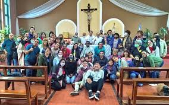

¿Dónde encontrar a Dios en medio del ruido, las obligaciones y el cansancio? Muchas veces pensamos que el encuentro con el Verbo requiere silencio absoluto, retiros largos o momentos especiales. Pero la verdad es que Él se hace presente en lo cotidiano.
En el abrazo al llegar a casa, en la paciencia con un compañero de trabajo, en el “gracias” dicho con el corazón, en el pan compartido sin esperar nada a cambio… ahí está Él. Encarnado. Vivo. Presente.
San Juan nos recuerda: “El Verbo se hizo carne y habitó entre nosotros”. No habitó en templos lejanos, ni en montañas inaccesibles. Habitó entre nosotros. En lo sencillo. En lo pequeño.
Te invitamos a llevar un pequeño diario espiritual esta semana. Anota al final del día: ¿Dónde vi al Verbo hoy? Quizás te sorprendas al descubrir cuántas veces pasó a tu lado… y tú no lo sabías.
“Lo que has oído, lo que has visto, lo que has tocado… eso les anunciamos.” (1 Jn 1,3)